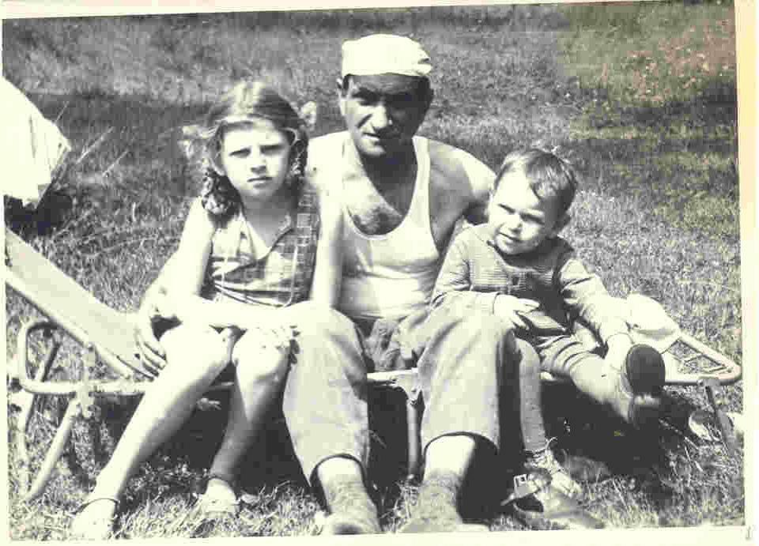
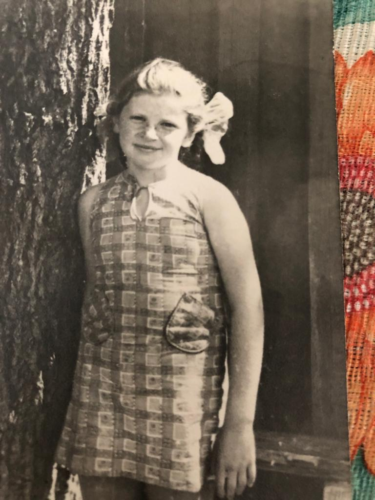
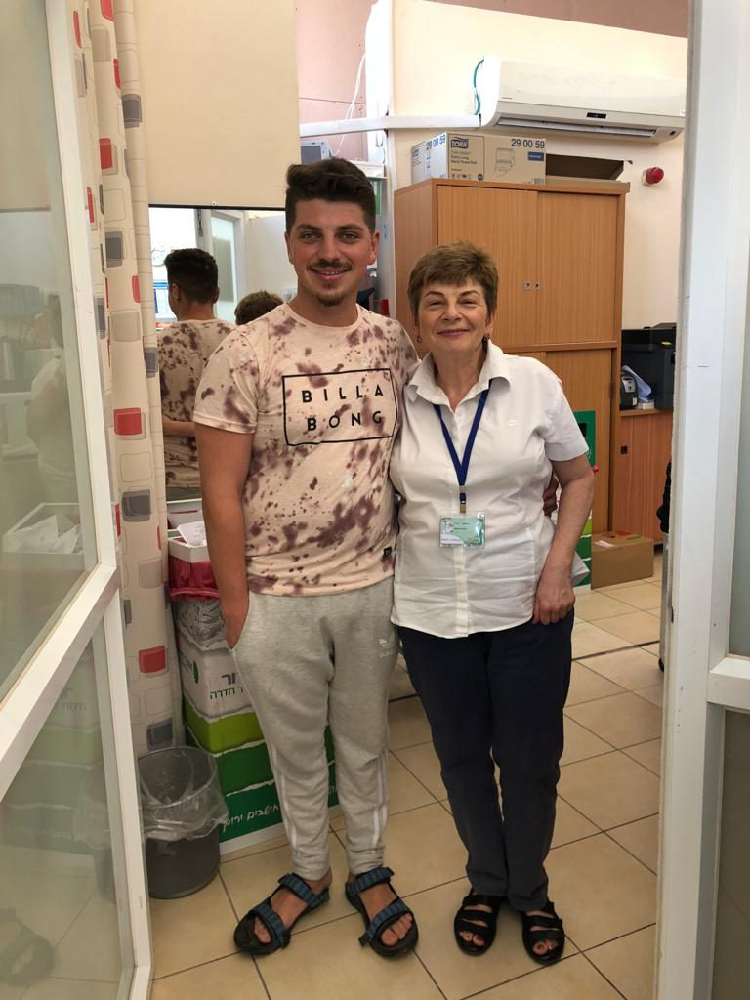
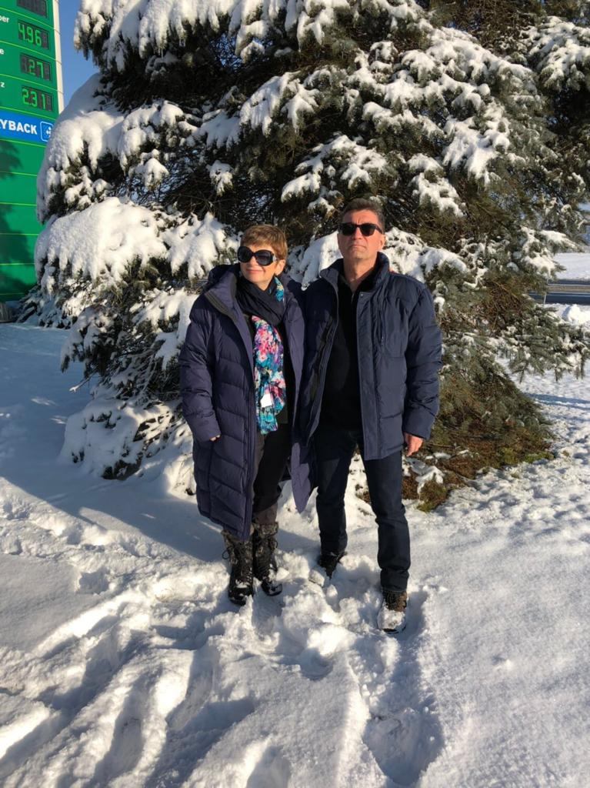
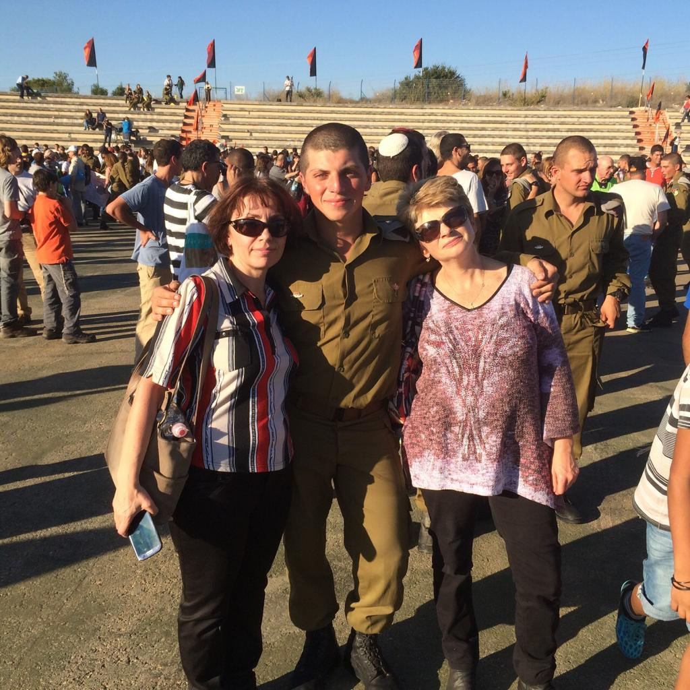

אני אירינה צ׳רטוק, נולדתי בגומל, בלרוס (אז חלק מברית המועצות) ב-09.07.1962, אותו יום שבו נולדה אימי, ד״ר ליליה דומצ׳יק ז״ל. אמא הייתה רופאת שיניים ואבי, ד״ר פרידריך דומצ׳יק ז״ל היה המרדים היהודי הראשון בעיר.
כשהייתי בת חמש נולד אחי, סרגיי. הייתה לי ילדות סובייטית רגילה, בקיץ היינו נוסעים לדאצ׳ה (בית קיץ) למשך שבועות. לאחר סיום התיכון התקבלתי ללימודי כלכלה באוניברסיטה הפתוחה ולאחר סיום תואר שני התקבלתי לעבודה בתור רואת חשבון בחברת תובלה.
בשנת 1987 הוזמתי לחתונה של לילה פרידמן, ביתם של חברים קרובים של הוריי. במהלך האירוע נתקלתי בבן דודה של לילה, בוריס צ׳רטוק. הכרתי אותו בתור ילדה ותכופות המשפחות שלנו נפשו ביחד. לאחר כשלושה חודשים בוריס הציע לי נישואין וב-13.03.1987 התחתנו.
לאחר כשנה, בתחילת מאי הבת שלנו מרינה נולדה. בחורף של 1990 עלינו לישראל ביחד עם משפחתו של בעלי ממש לפני תחילת מלחמת המפרץ הראשונה. התיישבנו בירושלים ואנחנו גרים שם עד היום.
באפריל 1995 נולד בני איתן. כיום אני עובדת בתור מזכירה רפואית בקופת חולים ונהנית לעזור לתושבי השכונה בה אני גרה.
|
בתמונה זו אפשר לראות אותי, עם סבא גרישה ז״ל, ובן דודי סשה, בעיר בה נולדתי וגדלתי - גומל/p> |
 |
|  |
זוהי תמונה מצעירותי, כאשר הייתי בת 15, בלי דאגות בחיים😉 |
|
בתמונה זו אפשר לראות אותי, עם בני איתן. התמונה צולמה כאשר הוא חזר מטיול של חצי שנה בדרום אמריקה, ובא להפתיע אותי |
 |
|  |
כאן בתמונה אפשר לראות אותי עם בעלי בוריס, נופשים בנורווגיה |
|
בתמונה זו אפשר לראות אותי, במקום עבודתי - קופת חולים כללית. התמונה צולמה ביום הולדתי, כאשר המשפחה שלי הפתיעה אותי עם זר. |
|
|  |
כאן בתמונה נמצאים אני, בני איתן, וגיסתי אלה. התמונה צולמה בטקס סיום המסלול של בני בצבא. |
שאלה 1:
ההבדלים בין web1, web2 ו-web3 הם:
שאלה 2:
דוגמא להבדל בין גרסאות ה-web היא כאשר משתמש רוצה לחפש מידע על אירוע מסויים שהתרחש בעולם. ב-web 1.0, המשתמש ימצא מידע על האירוע באתר חדשות, בין אם ע״י חיפוש במנוע חיפוש או ע״י גישה ישירה לאתר החדשות. המידע אותו הוא יקבל תלוי במה שחברת החדשות תרצה לספק ויכול להיות מוטה.
ב-web 2.0, המשתמש יכול לגשת לבלוגים ולאתרים שפתוחים לשיתוף מידע של כלל המשתמשים, כגון ויקיפדיה. כך הוא יוכל לקבל גם תוכן שלא נוצר ע״י חברה מסויימת, אלא תוכן מאנשים אחרים ברחבי העולם, וכך הוא יחשף לדעות שונות.
ב-web 3.0, עקב שיתוף המידע ברחבי האינטרנט, המשתמש יוכל לגשת לאתרים שמסתמכים על כמה מקורות מידע שונים, וגם על מידע שמשתמשים העלו, ובכך הוא יוכל לקבל מידע אמין יותר לגבי המאורע, מאשר בגרסאות הקודמות.